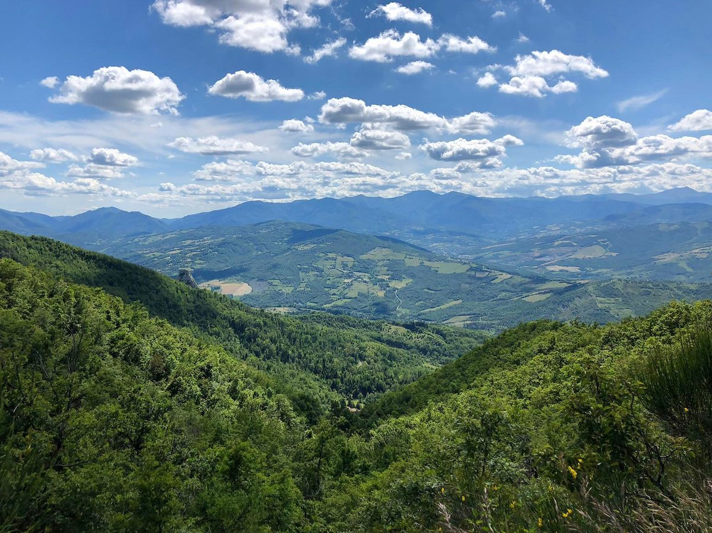
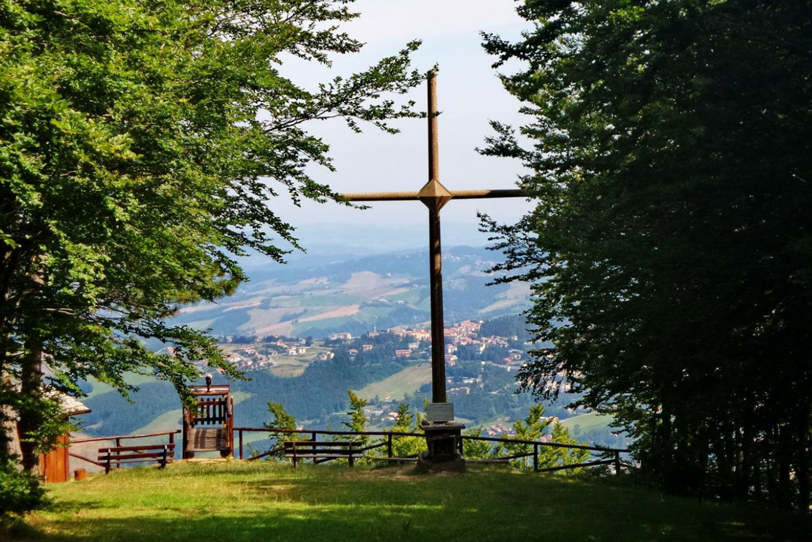
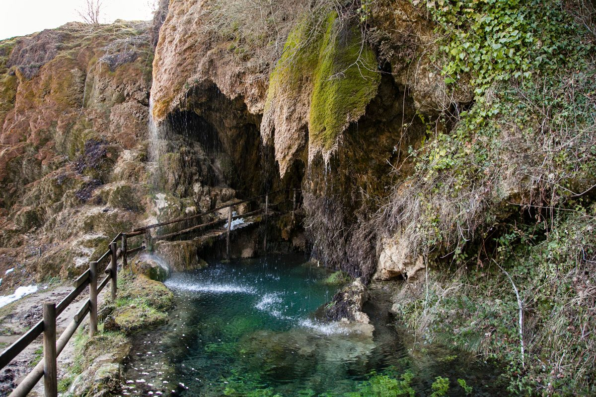
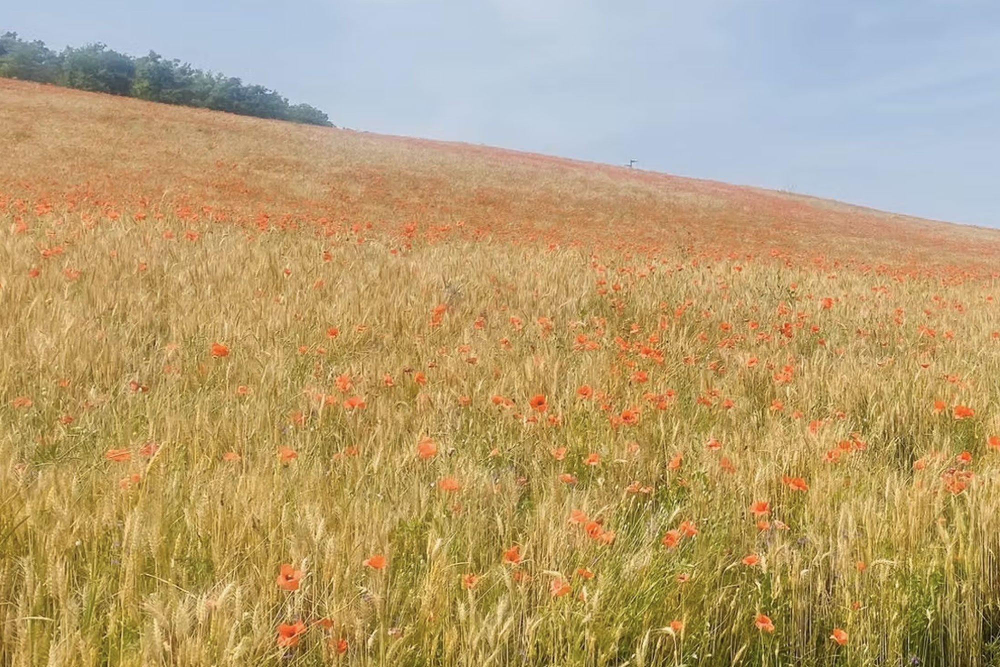
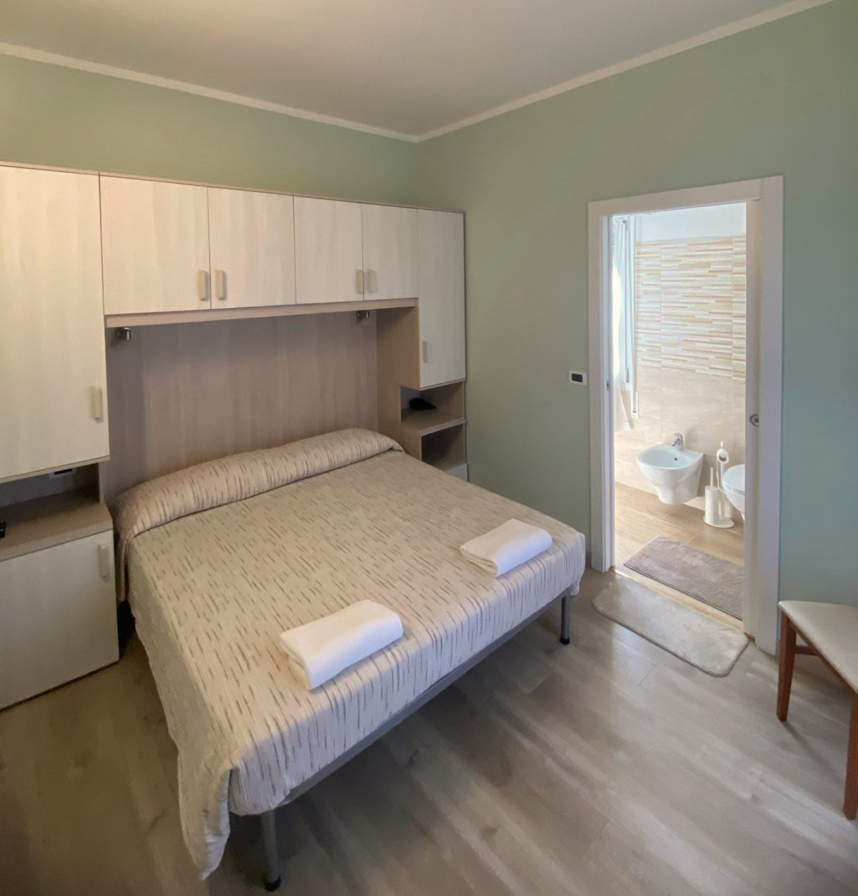
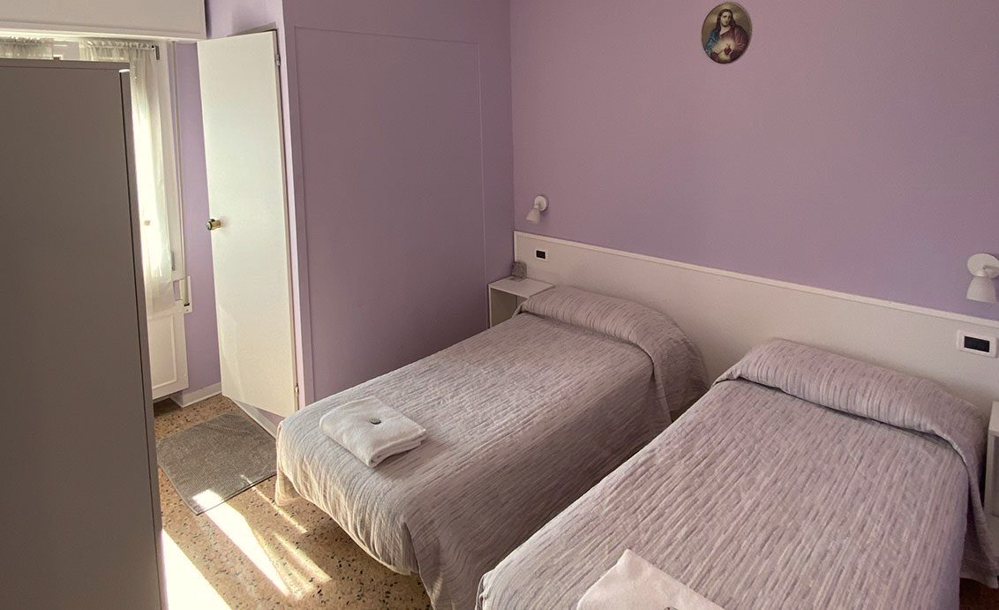
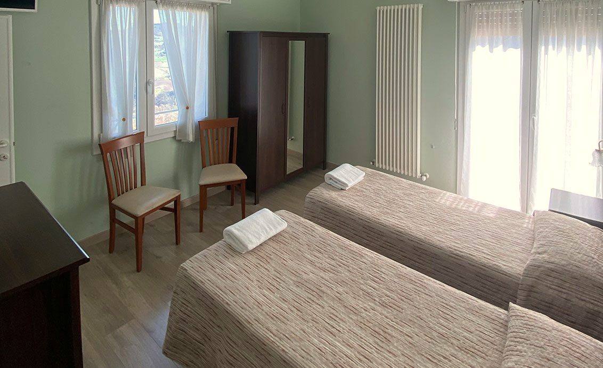
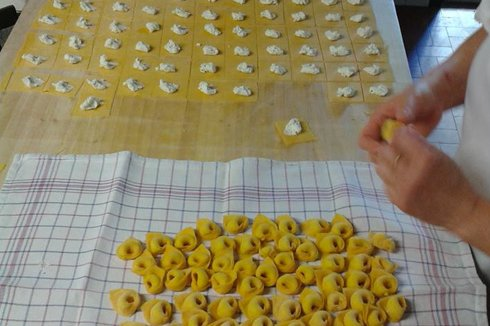
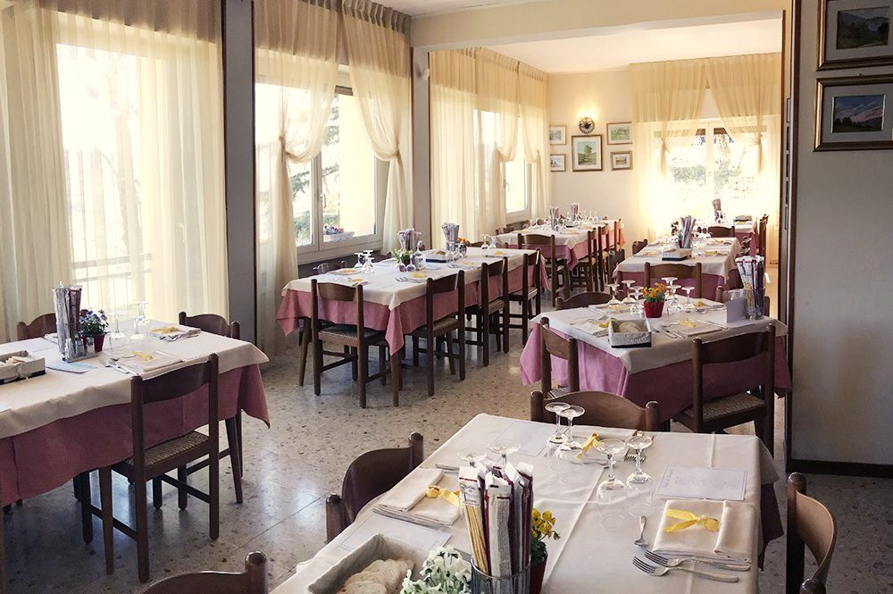
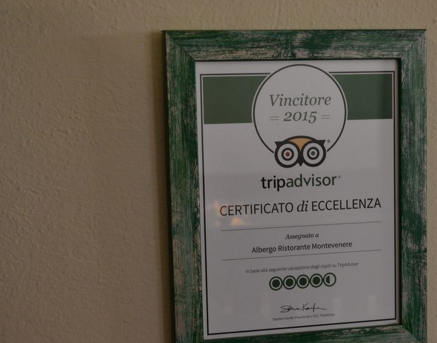

Albergo Ristorante · Monzuno (BO)
Sulla Via degli Dei, a 620 metri, c’è una tavola apparecchiata.
Undici camere con vista e un ristorante da 80 coperti. La famiglia Suppini accoglie i viandanti da oltre 50 anni.
- 50+anni di famiglia Suppini
- 11camere con vista panoramica
- 80coperti al ristorante
- 620 mdi quota, a Monzuno
La Via degli Dei
Monzuno è il quarto punto dei diciassette tra Bologna e Firenze.
L’albergo prende il nome da Monte Venere, la tappa che segue a 940 metri. Qui si arriva dopo Bologna, Badolo e Monte Adone: si lascia lo zaino, si cena, si riparte con la colazione già compresa.
- Bologna54 m
- Badolo370 m
- Monte Adone654 m
- Monzuno620 m
- Monte Venere940 m
- Madonna dei Fornelli770 m
- Monte dei Cucchi1140 m
Mostra le altre 10 tappe fino a Firenze
- Monte Poggiaccio1190 m
- Passo della Futa900 m
- Monte di Fò780 m
- Monte Gazzaro1125 m
- Passo dell’Osteria Bruciata820 m
- San Piero a Sieve200 m
- Monte Senario820 m
- Poggio il Pratone700 m
- Fiesole300 m
- Firenze50 m
Intorno all’albergo
Strade bianche, cascate, croci sul crinale.
Dall’albergo si raggiungono a piedi o in bici i luoghi che il sito racconta: l’Alpe di Monghidoro, le grotte e la cascata di Labante, il Corno alle Scale, il parco di Montovolo.



L’albergo
Undici camere, tutte con vista.
Recentemente riarredate, con vista panoramica, bagno privato e televisione. Singole, doppie o matrimoniali, triple e quadruple: la colazione è compresa nel prezzo.



- Colazione inclusa
- Wi-Fi gratuito ovunque
- Parcheggio ampio e gratuito
- Lounge bar
- Terrazza con veranda
- Giardino
- Bagno privato in camera
- Vista panoramica
Le tariffe sono a persona al giorno, in B&B, mezza pensione o pensione completa. Chiedi il prezzo al telefono.
Come prenotare
Camere e tavoli: si prenota per telefono.
Il ristorante
Pasta tirata a mano, per 80 coperti.
Tortellini, tagliatelle e lasagne fatte in casa, con i sughi dell’Appennino: funghi, tartufo, ragù. Carne e verdure dei secondi arrivano dal territorio.
Quando. Il ristorante e il bar sono chiusi al pubblico il martedì (gli ospiti dell’albergo possono prenotare la cena); ad agosto sono aperti tutti i giorni.



Prima di partire
Le domande che arrivano più spesso.
Non trovi la risposta? Chiama, ti rispondiamo a voce: +39 051 677 0548.